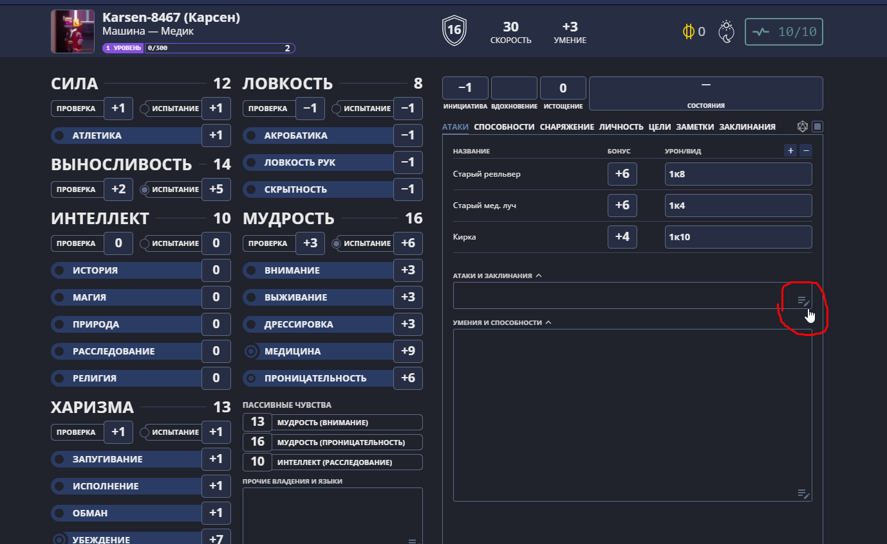
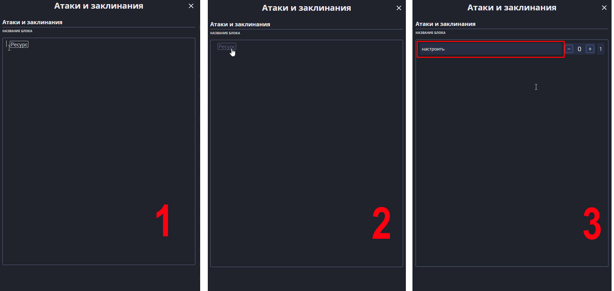

Большинство огнестрельного оружия требует боеприпасы для стрельбы. Сами по себе боеприпасы — это предметы. Однако при каждой зарядке магазина оружия эти предметы тратятся. Если вы используете longstoryshort.app, то чтобы не потеряться в записях и их можно было удобно редактировать, необходимо создать для каждого вашего оружия 2 ресурса: Боезапас и Магазин. Каждый раз когда вы будете атаковать, вы будете уменьшать количество патронов в магазине. Когда вы будете перезаряжать магазин, вы можете нажать на кнопку "Восстановить" в ресурсе Магазина, а из Боезапаса вычесть столько единиц боеприпаса, сколько было заряжено в магазин. Оружие в составе стартового снаряжения всегда идёт с полным магазином, независимо от вашего боезапаса. 
| Тип | Затраты |
|---|---|
| Лёгкая | 1 бонусное действие / 1 основное действие / 1 атака / 15 передвижения |
| Обычная | 1 основное действие / 1 атака / 25 передвижения |
| Тяжёлая | 1 основное действие / 30 передвижения |
Во время боя, Перезарядку можно произвести за счёт различных ресурсов, между которыми можно выбирать как угодно, в зависимости от вашей ситуации. Сколько и какие это будут ресурсы опредяет характеристика оружия "Скорость перезарядки". Если скорость перезарядки оружия не указана, значит она всегда будет Обычной. В таблице указаны 3 существущих значения Скорости перезарядки и их возможные затраты. Через косую черту перечислены варианты, один из которых вы можете выбрать.
Также, если у вашего огнестрельного оружия Отрицательная сатбильность, и вам выпала "единица с куба", то чаще всего ваще оружие не взорвётся, но случится Осечка, и вы оружие не сможет стрелять. Если у вашего оружия случилась Осечка, то вы должны потратить 1 Полную атаку, чтобы устранить её (обычно простого извлечения павтрона взведением хватает).